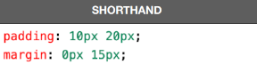

Tudo começa a partir do conteúdo (content), que representamos acima com o bla bla bla… Por padrão, toda caixa é composta apenas pelo conteúdo e não possui padding, nem border, nem outline e nem margin. Uma exceção curiosa é o elemento
que já vem com uma margin de 8px.Todo conteúdo possui uma largura (width) e uma altura (height) e a esse conjunto de propriedades, damos o nome de box-size (tamanho da caixa). O tamanho da caixa não inclui as medidas de padding, border, outline e margin.
Depois do conteúdo e de seu tamanho, vamos nos focar na borda que fica em volta dele. Ela pode ter uma espessura, uma cor e um formato.
Entre a borda e o conteúdo - da borda para dentro - temos o preenchimento (padding) e da borda para fora, temos a margem (margin).
Entre a margem e a borda, podemos determinar o contorno (outline) que é muito pouco utilizado, mas existe. Ele é um traçado visual que podemos criar fora da borda e o cálculo da sua espessura faz parte da margem estabelecida.
Basicamente caixas box-level ocupam 100% da widht de um site, além de sempre quebrar a linha quando colocadas.
As caixas inline-level fazem o contrário, continuam em linha e ocupam o espaço que detém da primeira a última caractere.
User agente é sempre usado para representar configurações feitas pelo navegador.
Olá 1
Olá 2
Há também a opção configurar apenas os lados de cima e baixo.
Também é possível fazer uma config. que deixe um elemento centralizado, por exemplo use: margin: auto;.
Cria áreas relativas a cabeçalhos. Pode ser o cabeçalho principal de um site ou até mesmo o cabeçalho de uma seção ou artigo. Normalmente inclui títulos <h1> - <h6> e subtítulos. Podem também conter menus de navegação.
Define uma área que possui os links de navegação pela estrutura de páginas que vão compor o website. Um <nav> pode estar dentro de um <header>.
É um agrupador usado para delimitar o conteúdo principal do nosso site. Normalmente concentra as seções, artigos e conteúdos periféricos.
Cria seções para sua página. Ela pode conter o conteúdo diretamente no seu corpo ou dividir os conteúdos em artigos com conteúdos específicos. Segundo a documentação oficial da W3C, “uma seção é um agrupamento temático de conteúdos, tipicamente com um cabeçalho”.
Um artigo é um elemento que vai conter um conteúdo que pode ser lido de forma independente e dizem respeito a um mesmo assunto. Podemos usar um <article> para delimitar um post de blog ou fórum, uma notícia, etc.
Delimita um conteúdo periférico e complementar ao conteúdo principal de um artigo ou seção. Normalmente um conteúdo <aside> está posicionado ao lado de um determinado texto ou até mesmo no meio dele, exatamente como fizemos no bloco de texto apresentado anteriormente, falando sobre “MÚLTIPLOS NÍVEIS”.
Cria um rodapé para o site inteiro, seção ou artigo. É um conteúdo que não faz parte diretamente do conteúdo nem é um conteúdo periférico (o que caracterizaria um <aside>), mas possui informações sobre autoria do conteúdo, links adicionais, mapa do site, documentos relacionados.
#teste-de-borda {
border: 10px solid;
padding: 10px;
border-image-source: url(borda.png);
border-image-slice: 27;
border-image-repeat: space stretch;
}